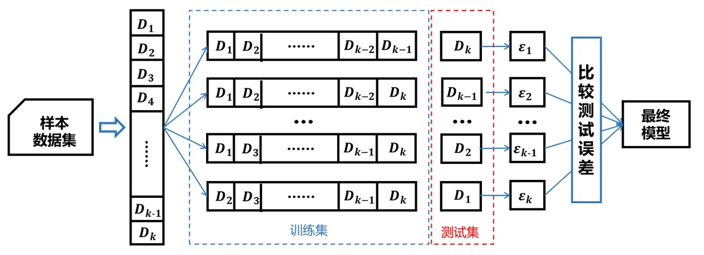

交叉验证
前言
当我们根据数据训练出一个机器学习模型时，我们希望它在新的数据上也保持较高的准备率，这就需要我们对学习到的不同模型有一个模型评估准则。
为了评估模型的泛化性能（指模型在未知数据上的预测能力），防止模型落入“过拟合”的陷进。我们人为地将原始数据划分为训练集和测试集，前者用于训练模型，后者用于评估模型的泛化性能。
训练集、验证集和测试集
在监督学习建模中，数据集常被划分为2~3组（验证集有时候不出现）：训练集（train set）、验证集（validation）和测试集（test set）。
训练集用于训练模型，验证集用于确定控制模型复杂程度的参数，测试集用于评估模型的泛化性能。但实际应用中，我们常常简单将数据集划分为训练集和测试集。
交叉验证的类别
交叉验证包括简单交叉验证、K折交叉验证和留一法三种。
1. 简单交叉验证
简单交叉验证直接将数据集划分为训练集和验证集，首先利用训练集在不同的参数组合下训练模型，然后在测试集上评价不同参数组合模型的误差，选择测试误差最小的模型。
2.K折交叉验证
首先将样本数据集随机等分为个互不相交的数据子集，然后依次将其中一份数据子集作为测试集，剩下份数据子集作为训练集训练模型，最后以选取测试误差最小的模型作为最终模型。原理如下图所示：

3.留一法
当折交叉验证中的等于数据集样本数时，我们便得到了当折交叉验证的特例：留一法。因为留一法使用的训练集只比原始数据集少了一个样本，因此评估结果往往比较准确。但当样本数据集较大时，需要训练模型也就越多。
因留一法的特殊性，往往在数据量较小的时候使用。